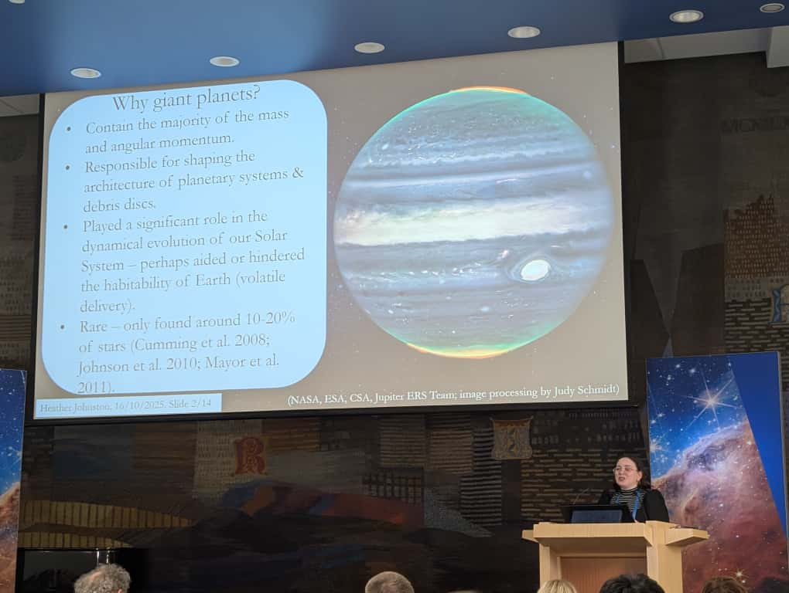

Research Overview
My research focuses on understanding how planets form in protoplanetary discs and how planetary systems evolve over time. I investigate the link between planet-forming environments and their resulting planetary systems, with particular emphasis on giant planet formation, disc evolution, and the influence of host stars on planetary system architecture.
Current Projects
Debris Disc Formation via External Photoevaporation
Johnston, H. F., Marino, S., Krijt, S. (submitted)
This project investigates the formation of large and wide debris discs through external photoevaporation processes. Using DustPy, a dust and gas evolution modeling tool, I examine trends arising in disc substructures and the mechanisms by which photoevaporation shapes debris discs. This work connects protoplanetary disc evolution to the debris disc systems observed around mature stars.
Link Between Planet Formation and Giant Planet Occurrence Rates
Johnston, H. F., Panić, O., Reffert, S., Liu, B., Ma, X. (in review)
This research reproduces the observed stellar-mass dependence of the giant planet occurrence rate using pebble accretion models. By connecting theoretical planet formation models with observational constraints from exoplanet surveys, this work explores the physical mechanisms that determine where and when giant planets form around stars of different masses.
Impact of Stellar Evolution on Giant Planet Formation
Johnston, H. F., Panić, O., Liu, B., Jankowski, P. (MNRAS 2025)
This project investigates how the pre-main sequence luminosity evolution of host stars affects giant planet formation efficiency. Stars evolve significantly during their first few million years, and this project examines how this evolution impacts the conditions necessary for forming giant planets via pebble accretion.
Recent Publications
Formation of Giant Planets Around Intermediate-Mass Stars
Johnston, H. F., Panić, O., Liu, B. (MNRAS 2024)
This foundational work from my PhD investigated the formation of giant planets around intermediate-mass stars (A-type stars). Using pebble-driven core accretion modeling with Monte-Carlo sampling techniques, I explored the trends and optimal conditions required for giant planet formation. The results show that intermediate-mass stars exhibit the highest occurrence rate of giant planets, and this work helps explain the observed diversity in planetary system architectures across different stellar types.
Research Interests
- Giant Planet Formation: Understanding the mechanisms and conditions for forming gas giant and super-Earth planets
- Protoplanetary Disc Dynamics: Modeling how discs evolve in response to planets, radiation, and photoevaporation
- Stellar Mass Dependence: Investigating how planet formation efficiency varies with host star properties
- Chemical Evolution: Studying how planetary compositions vary with formation conditions and stellar properties
- Observational Constraints: Connecting models to observations from missions like JWST and upcoming missions like ARIEL
- Debris Discs: Understanding the connection between planetary systems and debris disc architecture
Key Methodologies
- Pebble Accretion Modeling: Theoretical framework for understanding rapid core growth in protoplanetary discs
- Disc Evolution Simulations: Modeling dust and gas dynamics using tools like DustPy
- Monte-Carlo Methods: Sampling parameter space to explore formation scenarios and compare with observations
- Chemical Modeling: Tracking planetary composition as a function of formation location and conditions
- Observational Analysis: Integrating data from exoplanet surveys and disc observations
Observing Proposals & Collaborations
I am a Co-Investigator on several JWST proposals aimed at understanding planet formation around different stellar types and constraining the populations of planets in debris disc systems:
- "Planet Formation Around A-Type Stars: Establishing Sub-Jovian Planet Frequency Across All Spectral Types" (JWST Cycle 4)
- "Where are the sculptors: Constraining the population of giant planets in resolved debris disc systems" (JWST Cycle 4)
- "Determining the gas origin in debris discs via dust-gas interactions" (JWST Cycle 4)
I am also an active member of the ARIEL Consortium, working to prepare for the Atmospheric Remote-sensing Infrared Exoplanet Large-survey mission, which will characterize the atmospheres of hundreds of planets and provide crucial constraints on planet formation and evolution.
Conferences & Scientific Community
I regularly present my research at major conferences including the UK Exoplanet Meeting, European Astronomical Society meetings, and specialized workshops on star-planet-disc connections. My work has been presented as both contributed talks and invited seminars at universities including the University of Kyoto, University of Bristol, and University of Dundee.
Previous Research Experience
Stellar Spots and Accretion in Young Stars (MSci Project)
University of Dundee (2018-2020)
As part of my MSci Physics degree, I worked on modelling stellar spots in young, variable stars. This involved constructing star-spot models from synthetic photometric data, resampling using standard astronomical filters, and comparing with observations of young, active stars using chi-squared testing to verify model validity.
Time-Resolved Spectroscopy of Young Accreting Stars (Carnegie Trust Vacation Scholar)
University of Dundee (Jun-Aug 2018)
As a Carnegie Trust Vacation Scholar, I conducted computational analysis of 20-30 spectra from ESO's public spectroscopic data to study emission lines of young stars. This work aimed to identify signatures of variability to establish whether accretion processes were stable or unstable, and to correlate line variability with stellar properties.